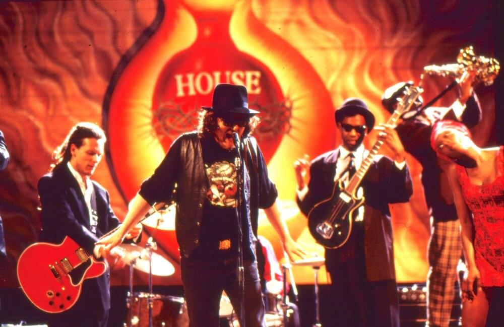

Un piccolo progetto per chi ha ancora
voglia di aprire le porticine del calendario dell’avvento...
ma senza trovarci cioccolatini.
Apriamo le porte alle idee!

Bella canzone! Povero Celentano, neanche un prete per chiacchierare era rimasto in città...
Ma se si annoiava perchè non è partito per le spiagge con lei?
Interessante che il pomeriggio è "azzurro" perchè proprio questo colore?
Il Blu di Modugno e l'Azzurro di Celentano, la sfumatura cromatica accomuna queste due canzoni, tra le più famose nel mondo
Canzone bellissima, però consiglio di godersi l'azzurro della natura e la compagnia di se stessi, senza che il proprio benessere dipenda dalla presenza di un'altra persona!
Bello
La cantavo sempre con mia mamma quando ero piccola!
La colonna sonora di tanti momenti belli...
Il treno dei desideri...all'incontrario va
Feedback
Cosa ti è piaciuto di Oltrelavvento e cosa no?
Consigli e critiche per una prossima edizione migliore :)

Settimana 1
1° posto: Domani, Artisti Uniti per l'Abruzzo

2° posto: A bocca chiusa, Daniele Silvestri e Paola Cortellesi

3° posto: Volta la Carta, Fabrizio De Andrè
Settimana 2
1° posto: You've got a friend
Amoroso, Giorgia, Elisa, Emma, Mannoia, Nannini, Pausini

2° posto: Futura, Lucio Dalla

3° posto: Le ragazze, Neri per Caso, Cortellesi, Fanelli, Cucciari, Signoris

Settimana 3
1° posto: You'll never find another love like mine
Laura Pausini e Micheal Bublè
2° posto: Immaginare il 2014, Banfi e Costanzo
3° posto: Vengo anch'io, no tu no, Enzo Jannacci

Spunto #24
Sella la renna (2007)
Paola Cortellesi e i Neri per Caso
Quanto è brava
Immensa Paola! Sei clamorosa in tutto quello che fai
Un bell’augurio per la vigilia di Natale!
Che esibizione magica
Una bella esibizione, mi pare un bel modo di concludere questo calendario delll’avvento :)
Una spettacolare conclusione del calendario!
Servono i sottotitoli perché con tutto il casino che c’è a casa sembra canti in spagnolo. Però bella la voce
Strepitosa... Come Giorgia che legge il referto di Fiorello, Paola riesce a rendere magico qualunque testo con la sua capacità vocale e la gran simpatia. È una che sa recitare alla grande anche senza parlare o cantare. Grandissima!
Spunto #23
Ministro della Pubblica Istruzione (1986)
Anna Marchesini

Quasi meglio della Azzolina!!
Troppo brava...
Mi ha dato l'occasione di approfondire questa grande comica e scrittrice italiana, con alcuni degli oltre duecento personaggi da lei interpretati, come l'iconica sessuologa Merope Generosa.
Qualcuno mostri questo video a Valditara
Bello
Il miglior ministro dell'Istruzione di tutti i tempi!
Anche se è “un po’ ciecata”… viva la Marchesini!
La Marchesini è stata una delle attrici comiche più brave degli ultimi anni, una forza incredibile, un'arguzia stratosferica e una capacità di improvvisazione che spiazzava anche le sue due spalle storiche. L'ho sempre adorata.
Strepitosa... Come Giorgia che legge il referto di Fiorello, Paola riesce a rendere magico qualunque testo con la sua capacità vocale e la gran simpatia. È una che sa recitare alla grande anche senza parlare o cantare. Grandissima!Spunto #22
Stiamo come stiamo (1993)
Mia Martini e Loredana Bertè
Che forza della natura
Son due sorelle che hanno fatto un patto
Questa √® proprio per me! Peccato averla persa cos√¨ prestoüò¢. Mimi': la mia cantante preferita, che voce! Che energia! Anche Loredana ha grinta da vendere...
Due voci importanti della musica italiana; uniche, cosí diverse ma cosí legate!
Belle le sorelle
Spunto #21
Quando Nevica, Elisa (2023)

Una voce candida, un'anima delicata: emozione pura
Nice song
"Ma il mio cuore te lo porti via tu" e succede sempre e di nuovo. Chi affida il cuore a qualcuno non pensa agli effetti collaterali perché ci crede fino in fondo. Per questo Natale brindiamo con chi, nonostante tutto, resta accanto a noi
Bellissima
Bella la canzone. La cosa brutta è che come dice nella canzone il tempo vola
Molto delusa, millantava previsioni meteo e invece niente. Segnalata
Elisa ha una voce molto delicata e un'eccezionale padronanza vocale, i suoi testi e le sue interpretazioni rivelano fragilità e forza, e lei è sempre rimasta umile e autentica. Il suo nuovo disco contiene un messaggio importante: darsi al mondo per quello che si è, senza la paura di non essere o dare abbastanza.
Non sono una fan sfegatata di Elisa, ma la trovo molto brava e la canzone è carina!
Spunto #20
Siamo i re del mondo (2013)
Romeo e Giulietta

Che ricordi...meravigliosa
Bellissimo! Brano intenso
Nuova scoperta: esilarante e suggestiva
Bravi! Non deve essere facile cantare e ballare contemporaneamente. Mi piacerebbe vedere lo spettacolo completo:)
Ti svelo un segreto. Non dirlo a nessuno ma Giulietta é femmina, invece nel video ci sono 2 maschi. Ma va bene lo stesso
Non conosco questo musical. Lo trovo fantastico, solo da questo piccolo spezzone. Sono d'accordo con la persona che si chiede come sia possibile cantare e fare quelle acrobazie, deve essere stradifficile. La la canzone, in compenso, mi è piaciuta tantissimo
Un musical, questo musical, all'arena, il grande talento di questi ballerini cantanti attori... sto urlando! Ora, dopo esserci calmati, riflettiamo su un messaggio importante di questo brano (perchè non lasciamo che tutta codesta bellezza ce lo faccia trascurare): una posizione agevolata, per privilegi sociali o ricchezza materiale, non potrà mai comprare il vero amore e la vera felicità!
Spunto #19
Vengo anch'io, no tu no (1968)
Enzo Jannacci
Un classico! Molto bella
Un talento davvero indefinibile, si è inventato un mondo, un linguaggio...
Di lui ho in mente i racconti di Paolo Rossi a Che Tempo Che Fa...chissà che personaggio deve essere stato
Mi ha fatto ricordare la pubblicità di MD
Cantata 100 volte con mia mamma quando ero piccola! Non avevo mai prestato molta attenzione al testo
Particolare come canzoneüòÖüòÇ
Posso venire a Lisbona con voi ? No tu no ma perché perché no
E' la mia infanziaaaa! E' un cult nella mia famiglia, che meraviglia rivederla qui!
Enzo Jannacci era geniale: un medico cardiologo riconosciuto a livello internazionale e, nel tempo libero, uno dei piú grandi cantautori italiani!
Jannacci lo conosco solo di fama, non mi sono mai soffermata ad ascoltare sue canzoni. Comunque questa non è il mio genere, ma rimane comunque un pezzo proprio particolare!
Spunto #18
Immaginare il 2014 (1990)
Lino Banfi e Maurizio Costanzo
Una bella sana risata, che fa sempre bene!
Costanzo, tra meme e leggenda
Eeeh incontinente‚Ķ.proprio lui che √® siciliano. ü§£ü§£ü§£
Mi fanno ridere
Bei tempi
Che bravi❤️
Mai vista questa scena! Sono andata subito a vedere quando ci hanno lasciato Funari e Corrado...praticamente sono rimasti solo Banfi e Baudo
Guardare questo genere di comicità mi fa riflettere. E' così pura, genuina, e fa ridere perchè è semplice. Trovo che davvero dovremmo chiederci cosa succeda in questi tempi, come siano cambiate le cose più semplici, a partire dalla risata. Oggi fanno ridere cose grottesche, a volte al limite del "legale". Una volta secondo me ci si divertiva con meno e di più.
Simpaticissimi e divertenti! üòÑ
Spunto #17
You Will Never Find - Caught In The Act (2010)
Laura Pausini e Michael Bublè
Due grandissimi talenti della musica. Un nuovo arrangiamento classico e un'interpretazione impeccabile di una canzone disco bellissima. Michael is droll.
Laura è un mito, dolce, brava, simpatica. Incredibile come la ragazza di Solarolo e la pop star convivano nella sua anima semplice
Una pagina di musica incredibile
Proprio due belle voci
Passionali e convincenti, profondi e perfettamente coordinati…esibizione emozionantissima!!
Ma lo sapevi che Michael buble è canadese?
Bellissima
-9 giorni a natale. Prossimamente al cinema solo canzoni di natale con loro due
Bello, bello, bello! Belle voci, bel pezzo e bellissimi loro due!
Che coppia esplosiva! Ma dove le trovi queste perleee... Sono davvero colpita, amo le loro voci combinate e poi, Michael è un classico in questi giorni!
Che bravi! Un duo veramente bello, soprattutto per le loro voci raffinate üòä
Il duetto di cui non sapevamo di avere bisogno
Spunto #16
Se mi vuoi (1995)
Pino Daniele e Irene Grandi

Molto bella e intensa. Pino Daniele un mito!
Una poesia dolcissima
Non la conoscevo! Canzone molto dolce e intesa☺
Irene Grandi ha una voce meravigliosa, peccato non abbia forse trovato canzoni alla sua altezza
Il suo stile o piace o non piace
Non è esattamente il mio genere, ma la canzone è carina
Mi ha colpito come questa musica delicata e questo testo, un confronto cauto tra due innamorati, riescano a far trasparire sia la loro dolcezza, aiuto e rispetto reciproco, sia la loro passione intensa e travolgente
Conosco la canzone. Molto romantica
La voce calda mitiga l’ansia che cresce, anche se la paura è sempre una certezza. Viva Pino Daniele!
Molto bella, da ascoltare!
Ho scoperto il video!
Delicata e potente al tempo stesso. Peccato per Irene Grandi, non è mai riuscita a sfondare però secondo me ha una bellissima voce. Immenso Pino Daniele.
Pino Daniele è intramontabile. Bellissima
Spunto #15
Il segno di Venere (1955)
Franca Valeri e Sophia Loren
Travolgente Franca Valeri con la sua voce penetrante e la sua risposta rivoluzionaria!
La grande forza dei bravi attori e dei bei film: l'essere senza tempo
La delicatezza della rivoluzione che, nonostante decenni diversi, deve affrontare purtroppo e per fortuna le stesse difficoltà
Complimenti alle attrici, che hanno saputo cogliere con delicatezza e leggerezza questa tematica, divulgando un potente e travolgente messaggio di rivoluzione!
Vado a rivedermi il film
Sono davvero grata di vivere in un’epoca in cui le donne possono lavorare ed essere indipendenti
Con i passaggi generazionali e i cambiamenti sociali, anche la mentalità e l'atteggiamento verso l'emancipazione della donna progrediscono e migliorano. Nonostante ciò, ingiustizie e violenze sulle donne sono all'ordine del giorno, anche nelle nuove generazioni. Dunque, riconoscendo gli importanti cambiamenti già avvenuti, è fondamentale sradicare retaggi cultuali non (più) ammissibili e raggiungere sempre più, al nord e al sud e in tutto il mondo.
Senza tempo davvero...dopo tutti questi anni ancora per molte cose mi sembra che siano passati invano...ü§ï.
Bello. Meglio a colori il üì∑
Che spunto bellissimo. Semplicità, delicatezza, e un messaggio di libertà. Grazie per averlo condiviso, mi ha convinta a cercare il film e vederlo!
Spunto #14
You've Got a Friend (2022)
Alessandra Amoroso, Elisa, Emma, Giorgia, Fiorella Mannoia, Gianna Nannini, Laura Pausini
Brave
Sensazionali! Che artiste incredibili
Bravissime, quanto talento in una sola canzone! Bella bella bella❤️
Che dire? Noi c'eravamo! Concerto indimenticabile. Causa nobile e sempre più necessaria. Brave!!!
Bravissime!! Il sovrapporsi perfettamente calcolato e allo stesso momento spontaneo delle varie vocalità lascia trasparire un’amicizia che le unisce tutte…
Che belleee, ci sono proprio tutte! Bravissime come sempre ❤️
Per sempre nel cuore
Bella. Quasi natalizia. Anzi proprio bella in questo periodo! ❤️
❤️
C'ero al concerto. 7 donne. Bello
Si possono fare passi importanti con questi tre ingredienti: - l'amicizia, argomento di questo brano splendido; - la vicinanza tra donne, rappresentata da questa collaborazione, ricca di forza, talento e bellezza; - il sostegno di tutte le persone, simboleggiato dal caloroso pubblico presente.
Il bene si avvera
I adore Carole King and this song! King's meaningful and melodic songs are a comforting refuge during uncertain moments in life. Indeed, there's something incredibly uplifting about hearing "You've Got a Friend" that can ease even the most somber mood...
...And it was my first time experiencing this song through various talented singers❤️. How they harmonize in unison amplifies all things this songs represents. It's a beautiful testament to the enduring power of friendship and support C:
Orgogliosa delle mie cantanti
Ho avuto la pelle d'oca per tutto il tempo. Meraviglioso. Non ho altre parole
Spunto #13
Clandestini, Riccardo Cocciante (2002)
Notre Dame de Paris

Spettacolare, grande intensità e contesto pazzesco. Tutti bravissimi
Il musical è un genere pazzesco, ammiro tanto gli attori, cantanti, ballerini sul palco
Bravissimi. Molto intenso. Dal vivo mi era piaciuto molto. Vorrei vedere un musical all'Arena di Verona
Ma le canzoni di Cocciante? Capolavori
Bello ma mi fanno paura
"Noi uomini e donne, soltanto vivi". Non importa chi sei, uomo, donna, straniero, il solo fatto di essere vivo ti legittima ad avere un posto nel mondo. Sembra la cosa più banale del mondo ma non lo è
Nella richiesta di asilo a Notre Dame c'è tutta la disperazione di uomini e donne che non sentono di appartenere a nessun luogo
Che musical! Per non parlare della forte intensità che trasmette!!
Un musical all'Arena: un sogno per me! Questa scena musicale sta narrando molto: la potenza della musica, l'aggressività della voce e l'energia del ballo sottolineano la determinazione di queste persone nel richiedere accoglienza e aiuto, mentre le delicate e umili parole cantate rivelano la loro disperazione!
Una tematica ancora attualissima trattata magistralmente in quello che forse è il più grande musical italiano. Sempre emozionante riascoltare questo brano, come tutti gli altri di questa grandissima opera.
Una scena davvero forte, soprattutto se ci si concentra sul testo. Sono molto affezionata a questi temi, e personalmente ho trovato geniale il musical come strumento di comunicazione!
Spunto #12
Scenetta "Il femminismo", Mondaini e Vianello (1978)

Troppo forti. E teneri.
Il latte per il gatto ü§£ü§£ü§£
Ringrazio Techetechete' per avermi permesso di conoscere questa coppia fantastica! Anche la comicità é un mezzo utile per trasmettere messaggi e condannare gesti ormai ordinari ma sbagliati.
I work hard so my cat can live a better life
Da morire dal ridere üòÜüòÇü§£ü§£ü§£
Bellissimi. Super Sandra!
Sono stati molto divertenti gli ho guardati spesso è stata una coppia eccezionale
Magistrali, hanno gettato le basi dell'ironia e della comicità in italia
Maaa che ridere ahahaha
Eccezionale non dico altro
Non so… questo tipo di comicità non mi fa impazzire. Le donne hanno fatto grandi sforzi per essere apprezzate e riconosciute e con questa scenetta le hanno un po’ ridicolizzate.
Li ho sempre adoratiii❤️ Che ridere, il latte per il gatto poii
Mi hanno fatta sorridere tantissimo! Al latte per il gatto sono crollata HAHAHAH
Spunto #11
La libertà, Giorgio Gaber (1972)

Ci manchi tanto signor G
Libertà è partecipazione! E' proprio vero, la libertà non arriva dal cielo, nè dalle istituzioni, nè dalla storia, ma da noi stessi, che dobbiamo darci l'opportunità di essere liberi. Questo vuol dire svincolarsi dai pregiudizi, dalle etichette dannose che imprigionano e vivere con pienezza tutte le possibilità che questo mondo ci offre
Canzone profonda da ascoltare
Nessuno nasce libero, a essere liberi si impara. E si può insegnare con l'esempio, perciò dobbiamo provarci con tutte noi stesse affinché chi verrà dopo sia un po' più libero di noi
Gaber genio indiscusso. Sono fiera di essere italiana per gente come lui. Ho fatto teatro per un po’ e ho sempre trovato i suoi monologhi brillanti ed esplosivi.
Come è che il sig G si è preso la libertà di andarsene? Avremmo bisogno di voci come la sua oggigiorno!!
Che bella canzone che parla di libertà
Nessuno nasce libero, a essere liberi si impara. E si può insegnare con l'esempio, perciò dobbiamo provarci con tutte noi stesse affinché chi verrà dopo sia un po' più libero di noi
Gaber e i suoi testi sono geniali! Una chiara semplice descrizione della libertà. La libertà é intrinseca nella natura, nell'uomo; peró l'uomo deve esercitarla e lottare per essa quando viene portata via.
Canzone da ascoltare e imparare. La libertà è un concetto ancora controverso e confuso con il poter fare quello che si vuole. Ma "la libertà non è uno spazio libero"
Bella. La canzone la conoscevo già
Non me l’aspettavo ma questa canzone mi è piaciuta davvero tanto, sia dal punto melodico che del testo, fa riflettere
Il signor G sempre un king
Non sentivo questa canzone da un sacco. Ha un messaggio importante e profondo su cui bisogna riflettere e non dare per scontato :)
Spunto #10
Cantare un referto medico, Giorgia e Fiorello (2009)

Sto ridendo!!! Fiorello riesce sempre a farmi ridere, Giorgia ha una voce splendida ed é rimasta umile! Consiglio a tutti VivaRai2 e Sanremo2024!!!
Il nostro show man
Fiorello potrebbe stare fermo e zitto e mi farebbe ridere lo stesso
Incredibile quanto poco ci voglia per far nascere un sorriso!
Prossima volta l'etichetta sulla bottiglia dello shampoo
Se faccio mettere in musica il mio referto Giorgia si deve fare aiutare dai Berliner Philharmoniker!
Prossimo video: Giorgia canta un atto notarile. 45 minuti di applausi
Che dire…con una voce così melodiosa ogni testo è una poesia: davvero divertenti!
ü§£ü§£ü§£ü§£ü§£ü§£ü§£ü§£ü§£ü§£ü§£ü§£ü§£ü§£ bello
Bellissimo... sono curioso di sapere cosa canterà Giorgia la prossima volta, forse un menù di Natale
Quant’è brava Giorgia❤️
Bello
…quando si è bravi si può fare anche questo!
Fiorello numero uno, soprattutto da quando a Sanremo ha salvato la situa Bugo e Morgan. Un mito. Sempre stato. Giorgia invece è troppo brava, è la cantante italiana che preferisco. Mesi a cantare le sue canzoni quando ero nel coro alle medie, mai imparato mezzo acuto <3< /p>
Mi spacco dalle risateee sono dei grandii
Spunto #9
Le ragazze (2023)
I Neri per caso, Paola Cortellesi, Emanuela Fanelli, Geppi Cucciari e Carla Signoris
Parole sante: è importante ascoltare sempre.
Esibizione fantastica, questo programma ci ha regalato tanti momenti di bella televisione
Tutti bravi, ma Paola Cortellesi sempre la migliore
Era tanto tempo che non li sentivo forti!
Che bello vedere artisti che siamo abituati a vedere in contesti diversi insieme
Che raduno di persone meravigliose! E che canzone!
Da ascoltare e far ascoltare! Che ogni singolo verso arrivi e faccia riflettere sempre più persone! Anche la musica è stato e può essere un importante mezzo comunicativo... Ho letto un' altra strofa della canzone, che vorrei condividere: Le ragazze che ispirano Tutti i testi delle canzoni Sono sempre al centro Dei discorsi di tutti noi Che non conosciamo Nemmeno la metà Di tutti quel che pensano E dei segreti che ognuna ha Le ragazze volteggiano Sulle ali degli aquiloni E noi innamorati Che le seguiamo da quaggiù Guarda come planano"... Qualcuna scenderà Ma quando si allontanano è no!
Che bello! Un momento magico e pieno di Verità ❤ Comunque la Cortellesi spacca, emozionatissima e bellissima come sempre
Uh non me la ricordavo più!
Considerando che è un brano del 1995, è incredibile quanto sia attuale. Il testo e le voci a cappella sono sempre state molto belle, questa interpretazione con queste 4 donne meravigliose, davvero speciale!
Treni in corsa che nessuno fermerà❤️
SI PUÒ AMARE DA MORIRE MA MORIRE D’AMORE NO… eppure succede tutti i giorni: allora cantiamo in onore delle donne vittime di femminicidio.
Profonda. Mi è piaciuta davvero tanto, a me fa riflettere. E poi i neri per caso mi piacciono da morire
Bellissima: per contenuto e interpretazione. L’ingresso in scena delle donne mi risuona interiormente per il trionfo che comunicano.
Grandi, veramente un perla!!
Presi singolarmente sono già dei talenti immensi, se li metti insieme il risultato non può essere che questo. Meraviglioso. Molto bello poi sentirla cantata da donne... soprattutto se le donne sono queste. Un bellissimo momento.
Spunto #8
Futura, Lucio Dalla (1980)
e se è una femmina si chiamerà...Futura. A tutte le donne del domani, perchè abbiano la possibilità di vivere il loro futuro
…domani: un futuro da costruire insieme. Come lo spunto di ieri si pensa al futuro, in unione, tenendosi le mani!
Non conoscevo questa canzone ma mi è piaciuta molto, i musicisti sono stati bravi come il cantante
Una canzone emozionante che sembra prevedere il futuro è che, quindi, fa riflettere su come non siamo ancora in grado di imparare dagli errori passati…
Ufff musicisti da paura
Molto bella anche questa versione. Io l'avevo riascoltata dopo tanto al cinema per il docufilm Dallamerica che mi ha fatto rispolverare vecchi brani di Dalla ma sempre attuali.
Lucio Dalla era a Berlino per vedere un concerto dei Genesis, ma ferma un attimo il taxi per sedersi su una panchina vicino al muro di Berlino. Scende e accende una sigaretta, in contemporanea esce Phil Collins da un altro taxi, i due non si parlano ma rimangono lì. In quei minuti Lucio ha scritto questa canzone.
Ho cercato le parole e mi sono davvero innamorata. E' una bellissima canzone, magari non perfettamente nelle mie corde per la musica, ma trovo le parole davvero dolci e ricche di significato <3< /p>
Bella Futura
Un messaggio di speranza per il Futuro con la certezza che le donne saranno sempre di più protagoniste della nostra Storia.
Io sto scoprendo e apprezzando sempre più Dalla, le sue canzoni, testo e musica, la sua voce. Con questo brano lui esprime la sua speranza per un futuro migliore, in cui non c'é alcun astio tra russi e americani, in cui 'nascerà e non avrà paura, nostro figlio', in cui il mondo non 'sta cadendo a pezzi', il cielo non è pieno di razzi e non si deve aver paura. Ascolto la canzone e anzichè poter solo apprezzarne la bellezza, provo inevitabile tristezza per la consapevolezza che tutti i problemi citati da Lucio non sono risolti, ma sono anzi estremamente attuali e con prospettive non ottimiste...
...tanto che diversi miei coentanei non intendono mettere al mondo figli, proprio per paura del futuro e del mondo in cui loro dovrebbero vivere. Il futuro sperato in questo brano non è il nostro presente, però può sempre essere il nostro futuro, se anche noi continuiamo ad avere speranza e amore, come ci insegna Lucio.
Non conoscevo questa canzone. Molto bella e con un significativo messaggio ❤
Curioso come Dalla nelle sue poesia riesca sempre ad infilarci russi e americani!
Bella canzone :)
Beautiful musical accompaniment, it is somehow a calming song that reassures you of a better future to come. Incredible how music can have such a profound effect on us
Spunto #7
Domani, Artisti Uniti per l'Abruzzo (2009)
Che emozionante! Ci sono proprio tutti
Questa canzone è l’emblema di quello che dovrebbe essere la musica…accendere i cuori, la speranza e unire le persone…la musica è di tutti e unisce tutti
"Day by day hold me. Day by day save me, shine on me". In ogni situazione mai perdere la speranza, mai dimenticarsi di splendere. Grazie per lo spunto di oggi!
L'armonia che c'è in questo brano è qualcosa di enorme, l'armonia tra le note della canzone, tra gli artisti che collaborano per una buona causa, tra i diversi generi musicali che questi artisti rappresentano, che però si incastrano in modo perfetto
Quando l'arte arriva dove non arriva la politica
Oltre ad essere un pezzo pazzesco, trasmette un significato importantissimo: insieme possiamo fare la differenza, possiamo dare un contributo
Che meraviglia questa canzone, ogni voce così riconoscibile e unita in armonia alle altre. Emozionante davvero, é un messaggio di speranza che non fa mai male ricevere
Questa canzone è stupenda, emoziona sempre come la prima volta che l’ascolti
Che artisti pazzeschi abbiamo!!
Bel momento. Fa sempre bene ascoltarli
Che emozione vederli tutti insieme per una giusta causa! Ci sono proprio tutti. Molti tra i miei preferiti. E anche qualcuno che non c'è più. Sigh
Ma quanto sono bravi ?!
Questa canzone è meravigliosa. Si porta dietro tanti ricordi di cantate intorno a un fuoco sotto le stelle. Mi fa anche un po' arrabbiare pensare che l'Aquila è tutt'ora piena di cantieri, palazzi storici puntellati, edifici pericolanti. Nonostante la società civile si sia ripresa, pur portandosi addosso parecchie cicatrici, le istituzioni e i media si sono presto dimenticati di quella notte tremenda e di quel popolo ferito. Per questa e altre ragioni sono convint che non possiamo più permetterci di aspettare che le istituzioni risolvano i problemi. La società civile ha in sé numerosi esempi virtuosi di comunità che si prendono cura di sé stesse: includendo i più fragili, prestando attenzione alla sostenibilità delle proprie azioni a livello ambientale e socio-economico...
...Non possiamo continuare ad avallare il sistema capitalistico e consumista in cui viviamo perché siamo noi quelli che si stanno consumando. Un passo alla volta informiamoci, smettiamo di supportare un'azienda complice delle guerre odierne, pretendiamo che i nostri diritti di cittadin e laborator vengano rispettati, non stiamo a guardare se un agente se la prende con una persona migrante, cerchiamo di riflettere sui beni che abbiamo o che desideriamo e su quanto siano realmente necessari. E soprattutto facciamolo insieme. Organizziamoci in gruppi di affinità tra collegh, inquilin, studenti. Perché si parte e si torna insieme. Sempre.
Ricordo quando la cantavamo ai campeggi scout, riuscendo a fare i diversi cori e dicendoci le parti. Veramente bella
Tutti bravi...
Domani tutti con l'Abruzzo
Bravi ma non li conosco
Quanti ricordi, quanta sofferenza! Ma quanto orgoglio nel vedere la comunità che INSIEME si rimbocca le maniche per ti-costruire il domani!
That is heartbreaking but at the same time their act is so full of humanity and beautiful
Brividi! É una chiara testimonianza della potenza e importanza anche della musica e dell'arte, per trasmettere messaggi e per aiutare gli altri. Tre considerazioni: stando insieme, collaborando, unendo talenti differenti, si impara molto e si possono raggiungere risultati spettacolari; in generale, facendo del bene, mettendosi al servizio, si dà agli altri, ma si riceve anche tanto; bellissimo il montaggio e l'arrangiamento!
Vedere come si può fare del bene con una sola canzone mi emoziona sempre. E' spettacolare vedere quanti sono! Ci sono tutti tutti!! Non ho parole, solo tanta ammirazione!
Emozionante! È bello vedere così tanti artisti uniti ❤
Un omaggio alle vittime e ai sopravvissuti del terremoto e un pensiero speciale al grande Franco Battiato!
Spunto #6
Medley, Virginia Raffaele (2017)

‚Ķfacciamo che ci avevamo creduto! Bravissima, bravissime! üëè
Un talento pazzesco! Non solo un'imitazione della voce, ma anche dei movimenti, dell'espressione...
È veramente un’artista a tutto tondo!! Riesce a riprodurre perfettamente voci, tonalità e intonazione!! Non solo, riesce anche a essere estremamente divertente!!
Ci abbiamo creduto tutti, su Patty Pravo e Gianna Nannini poi proprio impeccabile üòÇ
Meravigliosa! Io la stimo davvero tanto, ha proprio talento a imitare! E poi mi fa tanto ridere sempre
Sa proprio il fatto suo
Mitica! E non solo per le imitazioni, che sono comunque üîù
Pazzesca! Inquietante (in senso positivo) per la bellissima interpretazione. Mi è venuta la pelle d'oca dalla bravura!
Goofy but talented :D
Sa imitare, cantare, ballare, far ridere, interagire con il pubblico, ... un grande talento!
Semplicemente fantastica! La adoro!
Fantastiche interpretazioni
Sembra che la Raffaele imiti la Gianna Nannini
So che lei √® una comica e che con questa esibizione stava facendo delle imitazioni, purtroppo per√≤ non me ne intendo molto di musica italiana, per cui non ho colto le imitazioni e non ho potuto apprezzare a pienoüôà
Anche se il tipo di performance non è tra i miei preferiti lei è veramente brava
Spunto #5
X colpa di chi, Zucchero (1995)

Ascoltata alle 6:30 ottima carica per la giornata
Sugaaar una forza della natura, questa canzone trasmette energia pura!
Da piccola mi piaceva questa canzone perchè mi faceva ridere il "portare in giro la vita a fare la pipì", oggi mi fa ancora sorridere per la vitalità che sprigiona
Questa canzone mi dà sempre un'ottima carica per le vibes e l'energia che trasmette! ❤
Fa ridere e fa ballare, quindi fa bene alla salute, mentale e fisica!
Good vibes!
I need to set it as my alarm :D roosters crowing, followed by a blasting beat and music that would charge me for the whole day
Che energia! Non conoscevo questo video e mi è piaciuto tutto: il ritmo, i colori, ballerini e musicisti eccezionali che ti fanno venire voglia di ballare e dimenticare che "il mondo è ammalato"
Ora ho voglia di rivedere i blues Brothers, per qualche motivo
Da una carica enorme, infatti quando è iniziata la canzone mi è venuto un infarto
È dalle elementari che canticchio questa canzone. La verità è che è molto profonda…da moltissimi spunti di riflessione. In primos, la costante mancanza di tempo di cui tutti ci lamentiamo…ma ci manca davvero? O semplicemente lo gestiamo male? O passiamo la vita a correre dietro a cose futili che non ci lasciano niente dentro? Questa canzone è, a mio avviso, un invito ad andare oltre la superficie delle cose, a scavare un po’ più in fondo, per trovare il vero motivo per cui valga la pena usare il proprio tempo.o
Adoro il ritmo di questa canzone!
Ti dà adrenalina
Non sono mai stata una big fan di Suuuugar, però questa canzone spacca
Ah ah, giusto accompagnato da Jim Belushi e Dan Aykroyd üôàüôàüôà Musica dal ritmo travolgente di uno Zucchero in gran spolvero. Una ballata semplice musicalmente a tal punto da essere semplicemente geniale, nel testo e nella musica. Si riascoltetebbe in loop 100 volte senza stancarsi mai ‚ù§Ô∏è
Che carica stupenda questa canzone! Zucchero mi piace davvero tanto, mi sembra di ritornare bambina
Che ritmo. Che nostalgia questi video ( si diceva così?!) di altri tempi…
Spunto #4
Totò Peppino e la...malafemmina, Camillo Mastrocinque (1956)

Bitte schoon!
20 anni che abito a Milano e ogni volta mi chiedo anche io "ma per andare dove devo andare, dove devo andare?"
Che grandi!
Che ridere ü§£ü§£ü§£
Maaa che ridere ahahaha
A Milan quando c‚Äô√® la nebbia non si vede. Infatti non si vedeva nemmeno quel giorno, forse per questo non trovava no la strada üòÇüòÇüòÇ
Ah ah...bellissimo! "Eh Milan l'è un gran Milan" ma anche Toto' era un bel fenomeno
Come adesso con il navigatore!!!!
Aspettando gli amici di DESY a Milano! Almeno gli spieghiamo dove devono andare, se vogliono andare, dove vogliono andare.
Io quando mi cimento nel dialetto della mia città, che diventa un bel mix di francese, spagnolo e qualche umlaut ü!
‚ÄúAh ma parli italiano, BRAVISSIMO!‚Äù ‚ÄúDove credevate di essere? Siamo a Milano!‚Äù üòÇüòÇüòÇ
Beautiful black and white Milan, no words needed!
D'altronde se la scala fosse stata fuori, non si sarebbe riuscito a seguire bene il concerto d'opera
Quanti ricordi a casa di mio nonno guardando e riguardando questo film. Intramontabile.
Mi spacco. Sono troppo simpatici üòÇ
Mi ha fatto troppo ridere e un po' commuovere. Mi ha ricordato un po' il mio erasmus in Austria mentre cercavo di interagire con le persone con quel pochissimo di tedesco che avevo nel mio repertorio. Prontamente tutti (essendo vicini al confine con l'Italia sapevano entrambe le lingue) mi rispondevano confusi in italiano con accento tedesco. Ahahah che bei ricordi
Noio volevam savoir, parole che richiamano alla mente una persona tanto cara. A … con l’affetto immutato di sempre
Spunto #3
A bocca chiusa, Daniele Silvestri (2013)
con Paola Cortellesi
Per chi ha fretta, l'esibizione inizia davvero a 1:14
La canzone è davvero una perla del cantautorato italiano, ogni verso esprime una verità detta in parole semplici, che il dialetto romanesco rende ancora più popolari. Questa esibizione poi è molto emozionante, la Cortellesi sa proprio fare tutto
Semplicemente splendida ♥️
Emozionante
E' stato davvero tanto emozionante. Non avevo mai sentito questa canzone, ma è bellissima, mi ha lasciata senza parole. Lei una diva da capo a piedi, penso sia l'attrice italiana che preferisco in assoluto. Caleidoscopica pura
Adorable!
Bella canzone anche se non è il mio genere
A un certo punto della canzone viene nominato il presepe. Mi è venuto in mente un bimbo di sette anni, che ieri, passando affianco ad una sacra famiglia nel cortile di un oratorio, mi ha chiesto cosa fosse.
La bellezza salverà il mondo
Che bella Paola Cortellesi che canta
Troppo più forte degli altri. 9/10.
Ah, sa anche cantare... Testo bellissimo e importante, da ascoltare, rifletterci, e cantare tutti insieme! Fa prendere più consapevolezza dell'importanza della nostra voce, che è fisicamente un mezzo con cui ci presentiamo, con i nostri penisieri e bisogni. Un'assurda verità è che a molte persone nel mondo viene chiusa la bocca, negato il controllo e l'espressione di sé. Perciò noi dobbiamo usare la nostra di voce come un'arma buona con cui ci proteggiamo e lottiamo, per noi e per gli altri. Grazie Paola e Daniele!
Ho conosciuto questa canzone guardando il film. Così attuale. Cosi' forte. Una grande emozione. Vederla cantata dall'autore e dalla Cortellesi è ancora più emozionante. E quella frase che ti rimane in testa "se non per quella vecchia idea de esse tutti uguali"...
Brava la Paola‚Ķ..bella canzone che mi ha fatto conoscere Silvestri!üòÄ
Bella e brava
Questa canzone per qualche motivo me ne ha ricordata una francese, “Utile”, in cui viene detto: “ À quoi sert une chanson si elle est désarmé … Je veux être utile à vivre et à rêver” (A che serve una canzone se è disarmata? … Voglio essere utile per vivere e sognare)
Ho conosciuto questa canzone guardando "C’è ancora domani" e l’esibizione di Paola nel video l’ho vista dopo ancora. Avendo visto prima il film, la canzone acquista un significato leggermente diverso forse, ma decisamente non meno potente. La Cortellesi ci dimostra ancora una volta il suo immenso talento: conduce, imita, recita, canta, e adesso si mette dietro la macchina da presa per regalarci un capolavoro di film impreziosito da brani attuali e passati, e anche e soprattutto da questa canzone sul finale, a renderlo ancora più emozionante e potente, ma al tempo stesso delicato.
Il film e la canzone non riesco più a togliermeli dalla testa. Meraviglioso. E questa voglia di condivisione di emozioni e pensieri che si è creata attorno al film e attorno a questa canzone credo sia la dimostrazione che il messaggio è arrivato chiaro e preciso nell’anima delle persone, ha scosso le anime e sta facendo brillare tutto di luce nuova. Non ci sono parole adatte, non renderebbero… solo un immenso grazie per questa perla.
It was a memorable musical moment! The lively melody and singing, coupled with the song's empowering message is encouraging
Bellissima canzone, non la conoscevo ma è stata aggiunta subito alla mia playlist. E lei come sempre si piena di talento, gentilezza e eleganza
Quante riflessioni questo testo propone! E l’interpretazione di un’attrice conferma il talento della Cortellesi che ci porta con lei nella sorpresa.
Questa canzone è bellissima, ha un testo emozionante e il suo accento rende il tutto più magico. Attuale e profonda. Non ho ancora visto il film "C'è ancora domani" purtroppo, ma magari riascolterò la canzone con una sensibilità differente.
Canzone bella, ma malinconica. Molte opere d'arte nascono da una condizione di insoddisfazione. Cosa ne pensate?
Spunto #2
Non ci resta che piangere, Troisi e Benigni (1984)

Grande Troisi....«Ricordati che devi morire... sì, sì, mo me lo segno»
E' stato bello anche se non ci ho capito granch√© üòÖüòÖüòÖ
Troisi mi fa troppo ridere, una bravura travolgente che mette il buon umore
Sì ma chi siete? Dove andate? Che cosa volete?
Rido. Mi ha portato alla mente ricordi bellissimi. Sin da piccola ho sempre giocato a scopa, uno dei tanti giochi che ha unito tutti da generazioni :)
L'espressività e la gestualità di Troisi sono pazzesche, quasi uno non realizza che le carte non le ha davvero in mano...
Stupenda questa scena! Ho sorriso dall'inizio alla fine, è un umorismo che secondo me ormai si è un po' perso nella nostra società, una classe di altri tempi quasi... Penso di preferirlo a mille goliardate di questi anni viste in tv. PS: Leonardo che impara scopa mi ricoda me quando qualcuno mi spiega un qualsiasi gioco di carte haha!
Troisi è un mito! Rivedrei ogni scena 100 volte perché ogni volta è uno spasso!
Non ho mai imparato a giocare a scopa, anche se mi piacerebbe farlo, ma molto probabilmente farei la stessa fine del povero Leonardo, capirei ma non capireiüòÇ
Troisi era solo un maestro senza il materiale didattico necessario, sono sicuro che con un bel mazzo di carte vero Leonardo avrebbe capito come fare. Vai Leo siamo tutti con te!
Troisi un grande, però poteva insegnargli briscola chiamata invece che scopa...
Un grazie speciale alle renne di Babbo Natale che consegnano sempre i nostri messaggi. È fondamentale che il mondo legga
Non ho visto il film, ma avendo come registi Troisi e Benigni deve essere un capolavoro! Guardando questa clip, penso che se qualcosa è di normale e comune conoscenza e comprensione in un periodo storico non é affatto scontato che lo sia anche in un diverso periodo! Influenzano le innovazioni tecnologiche, le nuove abitudini e stili di vita, le diverse mentalità...
In fondo siamo un po' tutt* Leonardo, possiamo anche eccellere nel nostro campo ma ci sarà sempre anche la scopa a fregarci
Che bei tempi quando c'era ancora Leo! by CMB
Mi sento confuso
Eeh gli ingegneri da sempre nun capiscono nulla!!!
È stato come trovare un bel "cioccolatino"
La scena mi fa una tenerezza incredibile, soprattutto nella figura di Leonardo che ce la mette tutta pur di capire, senza mai essere scortese. Questo passaggio arriva al termine di un tentativo di spiegazione di altre invenzioni. Pur sembrando tutto inutile gli spunti banali nati dalle mani di un genio permettono di costruire un treno a vapore qualche centinaio d'anni prima üòäüòäüòä
Pare l’interrogazione di un alunno che conosco!?!?
Questa canzone è troppo bella! Mi ricordo che la cantavo con mia nonna da piccola <3
Quanto tempo è passato! Si vede dal volto di Cristiano!
Credo di essere stata tutte le versioni di Angiolina: quella che indossa le scarpette blu, quella che piange in cameretta e quella che impara a chiamare i ricordi con il loro nome. E so che le rivivrò periodicamente dato che sono tutte fasi che accompagnano un’evoluzione personale e un cambiamento. Personalmente non vedo l’ora di vedere come andrà avanti.
Mentre, sin da piccola, ho apprezzato il ritmo da subito incalzante di questa canzone, che mi fa venire sempre voglia di ballare, non posso dire lo stesso del testo che mi costava parecchio comprendere, in quanto mi creava una certa confusione associare e affiancare tutti questi elementi e queste "immagini", apparentemente prive di legame logico. Adesso però non è più così, tanto che quando spesso la ascolto, questa canzone, colgo sempre l'essenza del potere di De Andrè nel riuscire a raccontare una storia così profonda ricca di vari significati.
Grandi verità nascoste tra righe di filastrocca
Mi è piaciuta molto la canzone
L'inizio della canzone sembra bello, purtroppo non riesco mai ad arrivare alla fine della canzone by Top Quark
Canzone bellissima! Mi piace ascoltarla quando non sono impegnato a rompere la simmetria di gauge by Bosone di Higgs
Bella musica. Grande poesia, attualissima e qui le scarpette sono blu….un segno di speranza!?
Penso che tutti e nessuno possano essere Angiolina. Riflettendoci bene…chi non ha mai pensato certe cose o fatto certe esperienze. Credo che la maestria di De Andre sia far sembrare ridicola e divertente una canzone con un significato di incredibile profondità
Ennesima conferma che gli sbirri non sono molto simpatici
Pazzesca la dicotomia tra il testo estremamente triste e la musica così allegra :)
È la prima volta che sento questo brano e devo dire che mi è piaciuto, soprattutto la melodia è molto orecchiabile
Nel corso della vita é possibile dover affrontare una serie di difficoltà, di ogni natura, e inevitabile é il pensiero che accadano tutte solo a noi. La storia di Angiolina, con le sue tante delusioni d'amore ma a lieto fine, é un confortante ricordo che siamo tutti in compagnia, ed é un dolce invito a perseverare, perché la soddisfazione arriverà anche per noi, e a riguardare le difficoltà passate con tranquillità.
Non conoscevo questa canzone, molto più profonda della filastrocca da cui prende spunto; la musica è travolgente: impossibile rimanere impassibile!
Bella canzone
Paga il riscatto con le borse degli occhi piene di foto di sogni interrotti... Geniale e basta
Bella. Partiamo da lontano...